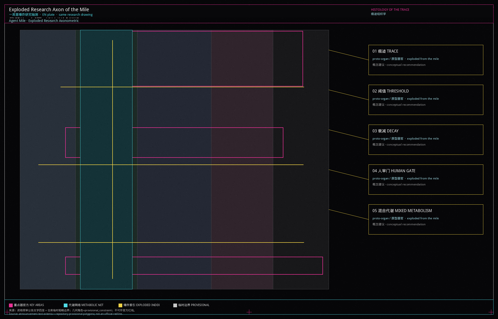

Core metrics · 核心指标
Site area
11.41 km²
11,412,825.386 ㎡ · EPSG:4548 · low
Shengyu Meng / 蒙胜宇 · Independent artist · Agent建筑师 · provisional geometry
Exploded research axon of the mile, five generators, and three organs. The rectangle is only a faint provisional envelope.

Coordinated research 43.6 km² · overall design provisional 11.41 km² · key-area text 368.4 ha. Official polygons pending.

Habitat 0702 / remnant park 1401 / metabolic research 0802 / phenotypic services 09 / fallow 16. Tissue names are research notes; codes are the land-use authority.

A mile greenway spine plus three cross-links toward Dazhongsi transit; road redlines pending official data.
Remnant blue-green spine overlaid with the unit public interface. Ratios recomputed from submitted geometry.

Four proto-organ footprints are conceptual masses, not a statutory building census or DRR decision.
Near-term trace stitching, mid-term metabolic loop, long-term phenotype and fallow review. Delivery agents and investment remain for professional deepening.
Ten scenario cards cover open-source release, safety sandbox, walking navigation, pitch hall, human-review gate and mixed metabolism. At least three are testing/validation scenes.
1.3 / 1.4 / 1.5 / agent.1–agent.6 · jingzhang-heritage-narrative · civic-agent-governance · youth-friendly-public-space
Four-gate self-check is written to self_check.json after PASS. Provisional boundaries stay visible.
sources.json · data/source_registry.json · official announcement and agent taskbook
A-PROV-BOUNDARY-001 · A-CONTROLS-001 · A-CONCEPT-001